R-KAH-01 · Mavi ahşap kahve ünitesi cam üst vitrin
Model referansı · 3000×3521 px
Mavi alt kapak/çekmeceler, ahşap tezgâh ve siyah çerçeveli sıcak ışıklı üst cam vitrin; ortada kahve ekipmanları.

R-KAH-02 · Gri country kahve servis ünitesi
Model referansı · 2454×3681 px
Gri çerçeveli kapaklar, yüksek yan depolama, orta cam üst dolap ve beyaz tezgâh; ahşap zeminli gerçek iç mekân.
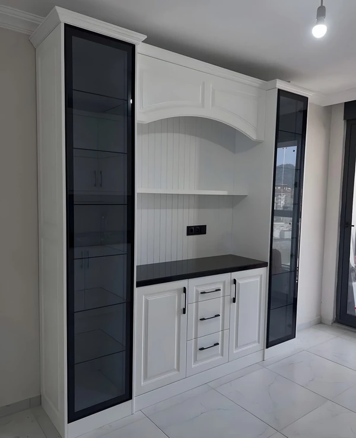
R-KAH-03 · Beyaz kemerli kahve ünitesi koyu yan vitrin
Model referansı · 1662×2048 px
Beyaz klasik taç/kemer ve raflar; iki yanda koyu cam vitrin, altta çekmeceler. Cihazsız ürün görünümü.

R-KAH-04 · Ahşap sağ vitrinli bağımsız kahve dolabı
Model referansı · 1200×2133 px
Ahşap gövde ve iç yüzeyler, gri uzun çekmeceler, siyah cam üst dolap ve sağda boy vitrin; beyaz fonlu ürün sahnesi.
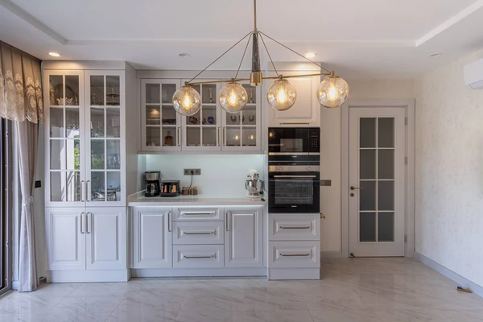
R-KAH-05 · Beyaz country servis ve ankastre duvarı
Model referansı · 1920×1280 px
Duvar boyunca beyaz çerçeveli/cam dolaplar, orta kahve tezgâhı ve sağ ankastre kolonu; geniş yatay iç mekân.

R-KAH-06 · Fırın nişli dört kapaklı beyaz kiler dolabı
Model referansı · 1920×1280 px
Bağımsız beyaz uzun dolap; ortada siyah fırın/mikrodalga nişi, üst ve altta ikişer kapak. Sade mutfak sahnesi.

R-KAH-07 · Siyah alt modüllü ahşap kahve köşesi
Model referansı · 1350×1800 px
Ahşap boy dolaplar, siyah alt modül ve asimetrik yükselen cam vitrin; pencere yanında kahve ekipmanları.

R-KAH-08 · Kavisli nişli sade krem gömme dolap
Model referansı · 1800×1200 px
Krem düz kapaklar, sıcak ışıklı kemerli açık raf ve tam boy yan depolama; cihazsız minimal servis/saklama tasarımı.

R-KAH-09 · Beyaz ahşap ışıklı kahve kiler dolabı
Model referansı · 1200×1800 px
Beyaz alt dolap, ahşap çerçeve ve ortada cam kapaklı ışıklı servis bölümü; kahve makineli, sıcak tonlu ürün sahnesi.

R-KAH-10 · Ayaklı beyaz country kahve dolabı
Model referansı · 1200×1800 px
İnce ayaklar, beyaz çerçeveli kapaklar, yarım ay kulplar ve ahşap tezgâh; üstte geniş camlı raf ve kahve makinesi.
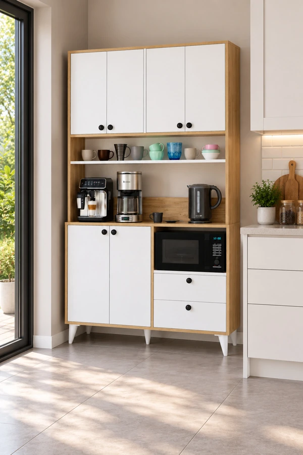
R-KAH-11 · Beyaz ahşap çok amaçlı kahve dolabı
Model referansı · 1200×1800 px
Ahşap yan çerçeve, beyaz kapaklar, açık fincan rafı ve alt fırın bölümü; pencere yanında bağımsız ürün sahnesi.
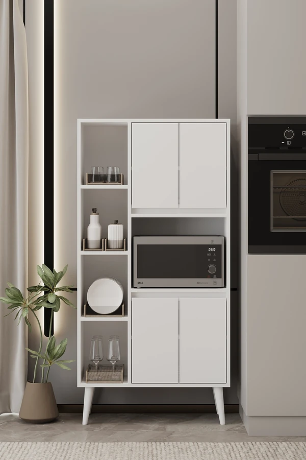
R-KAH-12 · Asimetrik beyaz fırın ve kiler dolabı
Model referansı · 1200×1800 px
Ayaklı beyaz depolama, sol açık raflar ve sağ fırın/mikrodalga nişi; sade modern mutfak ürün sahnesi.

R-KAH-13 · Kompakt beyaz ahşap kahve köşesi
Model referansı · 1200×1509 px
Beyaz country alt kapaklar, ahşap sırt paneli ve siyah cam üst dolap; sıcak LED ve kahve makinesi. Boş dış bantlar kesildi.
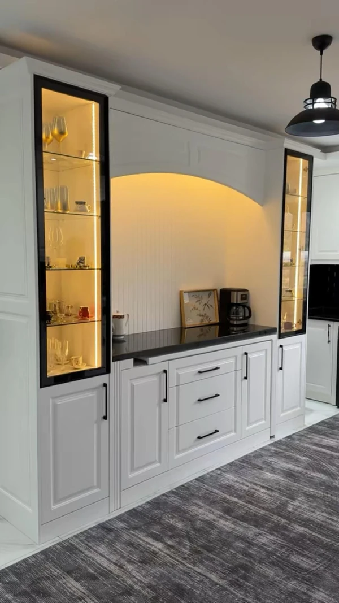
R-KAH-14 · Beyaz country kemerli kahve köşesi
Model referansı · 1080×1920 px
Kemerli beyaz niş, iki yanda ışıklı cam vitrin, siyah tezgâh ve alt çerçeveli kapaklar; gri zeminli iç mekân.
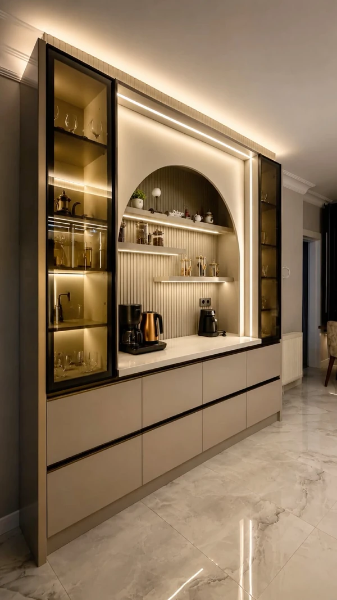
R-KAH-15 · Bej uzun kemerli kahve ünitesi
Model referansı · 1080×1920 px
Siyah çerçeveli yan cam vitrinler, ışıklı kemerli orta niş, açık raflar ve uzun çekmeceler; sıcak bej tonlar.

R-KAH-16 · Gri çekmeceli sağ vitrinli kahve ünitesi
Model referansı · 1142×1674 px
Ahşap arka yüzey, siyah cam üst dolap, sağda boy cam vitrin, gri uzun çekmeceler ve tezgahta ekipmanlar.

R-ANT-01 · Organik yuvarlak LED ayna
Model referansı · 1080×1920 px
Kavisli organik formlu duvar aynası, çevresinde sıcak LED ve solda ayaklı bitki; sade antre/ayna referansı.
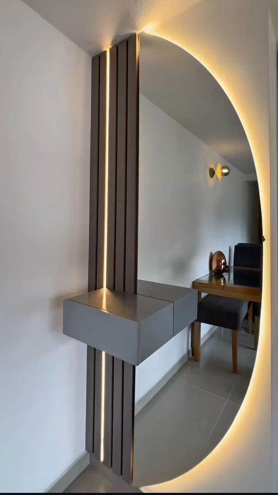
R-ANT-02 · Gri çıtalı asimetrik LED ayna konsolu
Model referansı · 1080×1920 px
Gri çıtalı yarım duvar ve asimetrik ayna; önünde tek asma çekmece, kenarlarda sıcak LED. Dikey yakın kompozisyon.
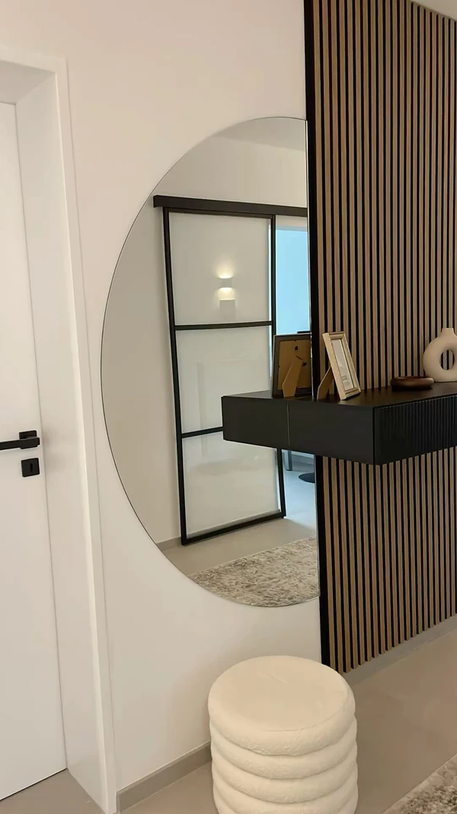
R-ANT-03 · Ahşap çıtalı yuvarlak ayna siyah konsol
Model referansı · 1080×1920 px
Duvarın yarısı ahşap çıta, yarısı yuvarlak ayna; siyah asma çekmece ve açık renk puf. Dikey antre görünümü.

R-ANT-04 · Gri mermer üstlü çift çekmeceli antre
Model referansı · 1224×1632 px
Geniş ayna, gri çıtalı yüzey, mermer görünümlü üst tabla ve iki çekmece; vazolu, sıcak LED aydınlatmalı iç mekân.
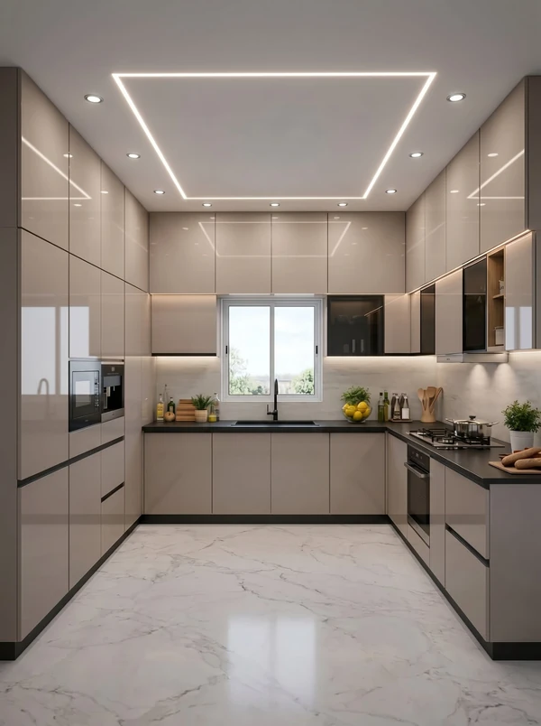
R-MUT-01 · Açık gri U mutfak geometrik tavan ışığı
Model referansı · 1792×2400 px
Ortada pencere, siyah tezgâh, açık gri düz dolaplar ve U yerleşim; tavanda dikdörtgen LED çizgisi. Dikey model referansı.

R-MUT-02 · Pudra krem düz mutfak duvarı
Model referansı · 2560×1441 px
Pudra/krem düz üst ve alt dolaplar, mermer desenli arka yüzey ve yüksek ankastre kolonu; geniş yatay kompozisyon.

R-MUT-03 · Bej kulpsuz mutfak yakın açı
Model referansı · 1440×1800 px
Bej düz dolaplar, uzun yatay tutamak çizgileri, gazlı ocak ve yüksek ankastre kolonu; sıcak ışıklı tezgâh yakın açısı.

R-MUT-04 · Gri mutfak siyah cam üst dolap
Model referansı · 1200×1600 px
Gri çekmeceler, açık mermer tezgâh/arka panel, siyah batarya ve yansıtıcı siyah cam üst dolaplar; yakın açı.

R-MUT-05 · Açık renk L mutfak sarı tavan ışığı
Model referansı · 1200×1600 px
Açık bej/gri L dolaplar, koyu tezgâh, ankastre ekipmanlar ve sıcak asma tavan ışığı; uzun dar mekân.

R-MUT-06 · Gri cam vitrinli bitkili mutfak
Model referansı · 1024×1820 px
Geniş cam üst dolaplar ve içlerinde bitkiler; açık gri alt çekmeceler, mermer arka yüzey ve pencere önü evye.

R-MUT-07 · Açık gri L mutfak pencere önü evye
Model referansı · 1536×1024 px
Açık gri düz dolaplar, siyah yatay çizgi, köşede ocak ve büyük pencere önünde evye. Yatay modern mutfak referansı.

R-MUT-08 · Ahşap çıtalı sıcak ışıklı mutfak
Model referansı · 1024×1536 px
Ahşap çıtalı üst kapaklar ve cam vitrinler, açık tezgâh ve düz alt çekmeceler; sıcak LED aydınlatma.
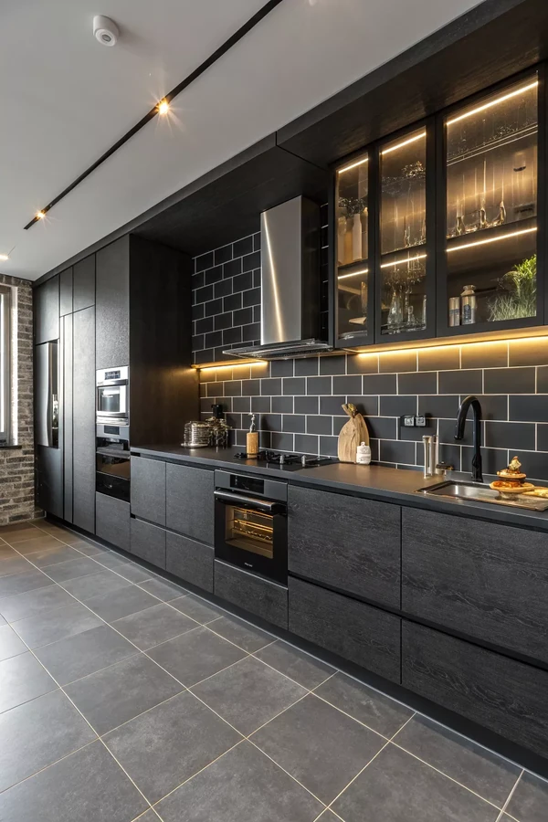
R-MUT-09 · Antrasit mutfak siyah metro seramik
Model referansı · 1024×1536 px
Koyu/antrasit dolaplar, siyah metro seramik arka yüzey, ışıklı cam vitrinler ve siyah tezgâh; güçlü koyu palet.
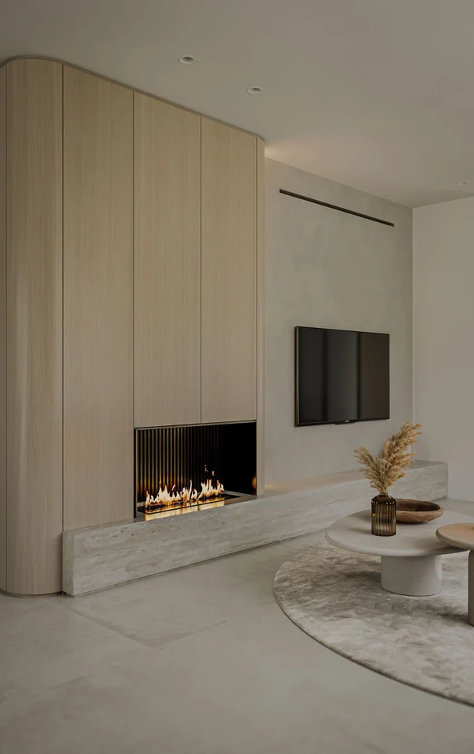
R-TV-01 · Açık ahşap TV şömine duvarı
Model referansı · 1036×1647 px
Tam boy açık ahşap panel, sağda siyah TV, solda doğrusal şömine, mermer görünümlü alt baza ve yuvarlak sehpa.

P-MUT-01 · Beyaz L mutfak ışıklı cam vitrin
Müşteriden gelen gerçek çekim · 2040×1425 px
Doğrudan çekim: beyaz köşe mutfak, siyah kulplar, sarı tezgâh ışığı ve üstte cam vitrin. Alt telefon/tarih damgası kırpıldı.

P-TV-01 · Ceviz çıtalı TV duvarı cam vitrin
Müşteriden gelen gerçek çekim · 2040×1425 px
Doğrudan çekim: ceviz çıtalı TV duvarı, solda uzun cam vitrin, koyu alt konsol ve sıcak LED. Alt telefon/tarih damgası kırpıldı.

P-MUT-02 · Beyaz L mutfak gri tezgâh
Müşteriden gelen gerçek çekim · 2048×1430 px
Doğrudan çekim: beyaz L mutfak, siyah çerçeveli üst camlar, gri tezgâh ve sağda buzdolabı. Alt telefon/tarih damgası kırpıldı.

P-MUT-03 · Beyaz mutfak cam üst dolap yakın açı
Müşteriden gelen gerçek çekim · 2040×1430 px
Aynı beyaz mutfağın yakın açısı; cam üst dolaplar, siyah kulplar ve tezgâh ekipmanları. Alt telefon/tarih damgası kırpıldı.

P-MUT-04 · Beyaz U mutfak geniş açı
Müşteriden gelen gerçek çekim · 1600×1200 px
Doğrudan çekim: beyaz U mutfak, gri tezgâh ve mermer görünümlü zemin; sıcak asma tavan ışığı. Geniş açı.
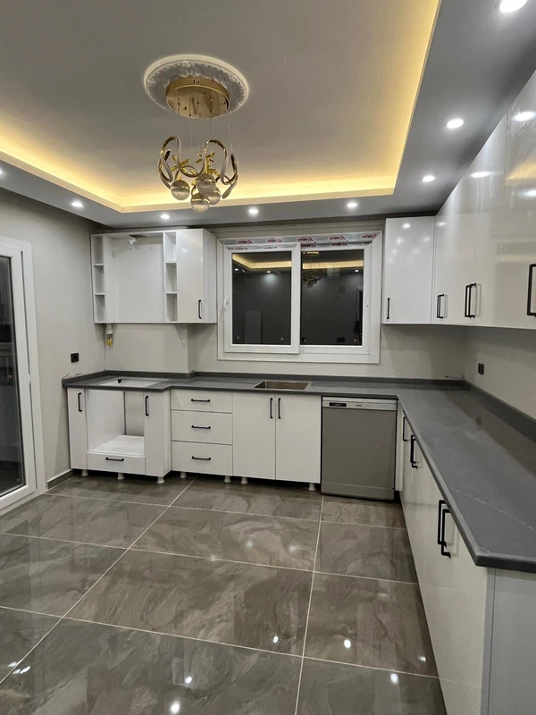
P-MUT-05 · Beyaz U mutfak pencere açısı
Müşteriden gelen gerçek çekim · 1200×1600 px
Aynı beyaz U mutfağın pencereye bakan dikey açısı; tavan ve zemin birlikte görünüyor.

P-MUT-06 · Beyaz country mutfak koyu tezgâh
Müşteriden gelen gerçek çekim · 1600×1204 px
Doğrudan çekim: beyaz country mutfak, cam kapaklı üst dolaplar, kemerli davlumbaz bölümü ve koyu tezgâh.

P-TV-02 · Mor LED TV ünitesi ön açı
Müşteriden gelen gerçek çekim · 2040×1425 px
Koyu çıtalı duvar, siyah kapalı TV, beyaz uzun alt konsol ve solda cam vitrin. Alt telefon/tarih damgası kırpıldı.

P-TV-03 · Mor LED TV ünitesi salon açısı
Müşteriden gelen gerçek çekim · 2040×1425 px
Aynı TV duvarının daha geniş/yan açısı; sağda ayaklı aydınlatma, zeminde salon ayrıntıları. Alt telefon/tarih damgası kırpıldı.
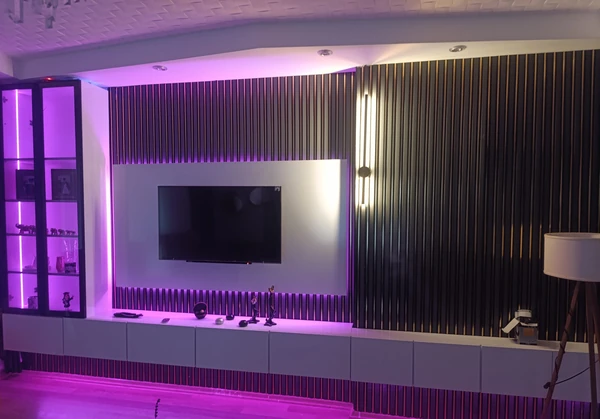
P-TV-04 · Mor LED TV ünitesi yakın açı
Müşteriden gelen gerçek çekim · 2040×1425 px
Aynı çıtalı TV duvarının daha yakın, mor ışığı baskın açısı. Alt telefon/tarih damgası kırpıldı.

P-ATL-01 · Atölyede panel işleme uzun tezgâh
Müşteriden gelen gerçek çekim · 1536×2048 px
Turuncu tişörtlü usta, dik beyaz paneli uzun makine tezgâhında işlerken; uzak üç çeyrek açı.

P-ATL-02 · Atölyede panel işleme ön açı
Müşteriden gelen gerçek çekim · 1536×2048 px
Usta, beyaz panel ve uzun tezgâhın daha önden görüldüğü üretim karesi.

R-KAH-17 · Siyah cam vitrinli beyaz kahve ünitesi
Model referansı · 1200×1530 px
İki yanda boy siyah cam vitrin, ortada ahşap niş ve altta beyaz kapaklar. Alt sehpa/dergi alanı kırpılarak yazı kaldırıldı.

LOGO-01 · Şimşek Mobilya logosu
Marka görseli · 1290×1539 px
Krem zemin, koyu ahşap ev/koltuk işareti, ŞİMŞEK marka yazısı ve iletişim satırı. JPEG; şeffaf değil.